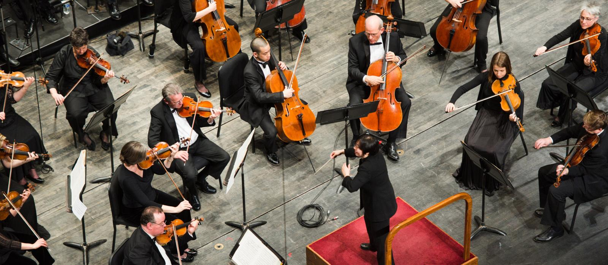

La música clásica (también llamada, en distintas áreas hispanohablantes, música académica, música de concierto, música docta, música culta, música erudita, entre otras denominaciones) es la corriente musical que se basa principalmente en la música producida o derivada de las tradiciones de la música litúrgica y, sobre todo, de la música secular de Occidente, teniendo como foco mayoritario Europa Occidental, y que posee un referente de transmisión fundamentalmente de tipo escrito, lo cual suele vincularse al carácter riguroso de su reproducción e interpretación. Aunque de forma amplia abarca un periodo de tiempo que va aproximadamente del siglo xi a la actualidad, es frecuente que se restrinja su uso para referirse a la Música Académica anterior al siglo xx, aunque en esencia y a pesar de que la música clásica propia del siglo xx posee estilísticamente diferencias substanciales con la producida en siglos anteriores, es esta considerada el resultado del mismo proceso evolutivo. Si bien, las principales características del género fueron codificadas principalmente entre 1550 y 1900, que es habitualmente considerado como el período característico de producción de la música clásica, su desarrollo se extiende a todo el siglo xx y xxi. En un sentido historiográfico, la música clásica antigua se ha dividido tradicionalmente en varios periodos, ante los cuales la musicología del último medio siglo ha mostrado crecientes reticencias: música medieval, que abarca el periodo comprendido por la Baja Edad Media en Europa (1000-1400); la música renacentista (1400-1600); la música barroca, que coincide con desarrollo del arte barroco (1600-1750); el clasicismo (1750-1820), que en la Historia de la música y la musicología es a veces llamado «música clásica»; el Romanticismo (1820-1900); y la música contemporánea, que comprende las distintas corrientes de música clásica del siglo xx, que adopta la composición atonal y otras tendencias opuestas a corrientes anteriores.
Debido tanto a sus características técnicas, a la creciente profesionalización de la profesión de músico y compositor, y al contexto socio-cultural en el que se desarrolla (bajo el patronazgo de aristocracia, iglesia y burguesía), la música clásica es habitualmente definida como la «música de tradición culta»
La música clásica en general se caracteriza principalmente por el tipo de lenguaje utilizado, el cual se fundamenta en el desarrollo amplio y variado de ideas musicales a partir de temas, motivos, sujetos, contrasujetos, frases, estructuras contrapuntísticas, pasajes modulantes, secciones de reexposición, variaciones temáticas, etc. las cuales se organizan con el objetivo de crear una «narrativa» sonora particular. Con ello el compositor crea un entorno descriptivo de ideas abstractas o concretas convertidas en melodía, armonía y ritmo, encaminadas a dar forma a una estructura sonora con algún sentido específico.
En ese sentido, la música clásica se distingue de la música «popular» y de otras tradiciones clásicas no europeas por su apego a la notación musical simbólica en uso desde aproximadamente el siglo xvi. Dicha notación permite a los compositores prescribir de forma detallada el tempo, la métrica, el ritmo, la altura y la ejecución precisa de cada pieza musical. Esto limita el espacio para la improvisación o la ornamentación ad libitum, que son frecuentes en la música artística no-Europea y en la música popular. Otra característica es que mientras la mayoría de los estilos «populares» tienden a desarrollarse alrededor del género de las canciones, la música clásica se ha caracterizado por el desarrollo de formas y géneros musicales altamente sofisticados y muy elaborados, basados en desarrollos complejos y en el empleo de una muy variada y perfeccionada instrumentación. Por ello, la Música Clásica suele requerir, tanto de los músicos como de los compositores, de un alto grado de profesionalización y especialización.
El término música clásica aparece por primera vez a principios del siglo xix, en un intento para destacar el valor duradero de tradiciones anteriores, y muy especialmente la época de J. S. Bach y G. F. Händel, vista ya entonces como una edad dorada de la música. En la actualidad dicho término está asociado a la tradición de la Música Culta o Música Académica descrita arriba, y es a veces sustituido precisamente por los términos Música Culta o Música Académica para resaltar su importancia y carácter frente a la músicas populares que han adquirido estaus "Clásico" como exaltación de un valor particular (Jazz Clásico, Rock Clásico, Salsa Clásica, Bolero Clásico, Tango Clásico, etc.). En tal sentido, para la música clásica o académica del siglo xx se ha reservado el término "Música Contemporánea". Sin embargo, de forma popular, el término música clásica suele reservarse casi en exclusiva para referirse al contenido de este artículo.
Pulsa este boton para volver a la pagina principal: